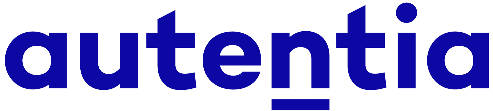
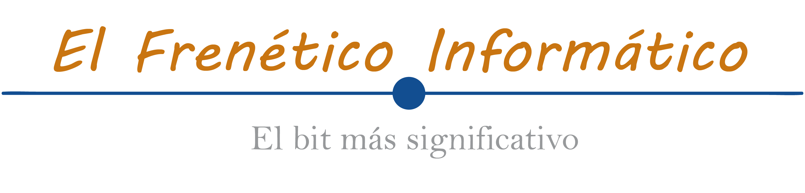

Urbano Villanueva
Dessarrollador de software en AUTENTIA
ÍNDICE
Haz click en aquello que quieras conocer!
Trayectoria
Experiencia laboral, de más reciente a más antiguo
Llegué a Autentia al terminar la carrera para realizar las prácticas
He comenzado como becario desarrollador de sfotware
Autentia Real Business Solutions SL
Comencé a trabajar como Mecánico de Precisión CNC a los 18 años, combinándolo con mis estudios en la UAH
Comencé de la nada y, poco a poco, fui aprendiendo
UTILLAJES HERMANOS ÁLVAEZ SL
- Operario de funcionamiento y mantenimiento de máquinas de control numérico de las principales marcas del mercado: Matsuura, Mori Seiki, Mazak y Datron
- Fabricación de utillajes de precisión
- Control de calidad, revisión de pedidos
- Responsable de carretilla
- Operario de máquina habitual, fabricación en serie de componentes aeronáuticos y aeroespaciales de precisión y de alta complejidad
Conocimientos y habilidades
A lo largo de toda mi trayectoria profesional y estudiantil, he adquirido numerosos conocimientos en muchos campos. A continuación se muestran aquellos que pueden resultar más interesantes:
Tengo gran habilidad en todas las plataformas, independientemente de si está basada en Unix (Linux, MacOS) o Windows (especialmente Windows 10). A nivel personal, mi preferida es Linux (Ubuntu). Para trabajar en entornos de producción, MacOS me gusta más.
El lenguaje en el que más experiencia y conocimientos acumulo es Java. No obstante, más a nivel personal que profesional, trabajo también con Python, especialmente para analítica y Big Data, y C++. Si bien he realizado proyectos en otros lenguajes como Matlab o incluso Pascal, hace tiempo que no los practico, principalmente desde mi etapa universitaria, y por ello no estoy tan familiarizado con ellos.
Estoy altamente familiarizado con las metodologías ágiles, principalmente Scrum. También acostumbro a utilizar Xtreme Programming y Pair Programming a diario en mi entorno laboral actual, Autentia. Para una buena calidad de código, no puedo pasar por alto mencionar mis habilidades con TDD y un alto conocimiento en Patrones Software, principios SOLID, Refactoring y Clean Code , entre otros.
Estudios y titulaciones
Graduado en Sistemas de Información cuento, además, con otros cursos y titulaciones, junto a una gran cantidad de conocimientos autodidactas
Entre los años 2014 y 2019, combiné mi trabajo en UH Álvarez con los estudios en la Escuela Politécnica Superior de Alcalá de Henares
Grado en Sistemas de Información
Escuela Politécnica Superior, Universidad de Alcalá de Henares
Algunas asignaturas y cursos más destacados aprendidos en esta etapa:
- Programación e Ingeniería del Software Avanzada (JAVA)
- Bases de datos (Fundamentos, II y avanzadas)
- Algoritmia y Estructuras de Datos (C++)
- Sistemas de Visión Artificial (Matlab, docencia en inglés)
- Machine Learning y Deep Learning
- Análisis y Valoración de Proyectos de Inversión
- Gestion de Proyectos, Personas y Equipos
- Seguridad Avanzada en Redes
- Patrones Sofware
- Computaicón Ubícua
- Robótica y Sistemas de Control Inteligente
Seguriad Avanzada en Sistemas Distribuidos
Junio de 2016
En la UAH
Curso intensivo de verano


Conceptos básicos de desarrollo de Apps móviles: Android
Junio de 2016
Por Google Actívate
Curso básico de 25 horas
Proyectos y colaboraciones
Proyectos propios o colaboraciones en proyectos de terceros
elfreneticoinformatico.com
Creador, propietario y autor de elfreneticoinformatico.com, mi blog personal
Artículos varios y personales sobre Software, tutoriales, opiniones y recomendaciones de productos
Autor en adictosaltrabajo.com
Creador, propietario y autor de elfreneticoinformatico.com, mi blog personal
Artículos varios y personales sobre Software, tutoriales, opiniones y recomendaciones de productos
Magic Mirror, tu espejo inteligente
Proyecto universitario para la asignatura Computación Ubícua
Software para convertir un espejo convencional en un espejo inteligente con diversas funcionalidades:
- Cronómetro para el cepillado de dientes
- Control por voz
- Encendido automático, detección de presencia
- Sincronización de agenda con servicios de Google y recordatorios automáticos
- Climatología (por controles de voz)
- Mediciones de temperatura, humedad y condiciones del ambiente
Contacto
Si deseas contactar conmigo aquí tienes a tu disposición mis datos de contacto y un formulario web de contacto directo:
-
Email
u.villanueva95@gmail.com -
Teléfono
+34 655422693 -
Localización
Torrejón de Ardoz, Madrid -
Redes